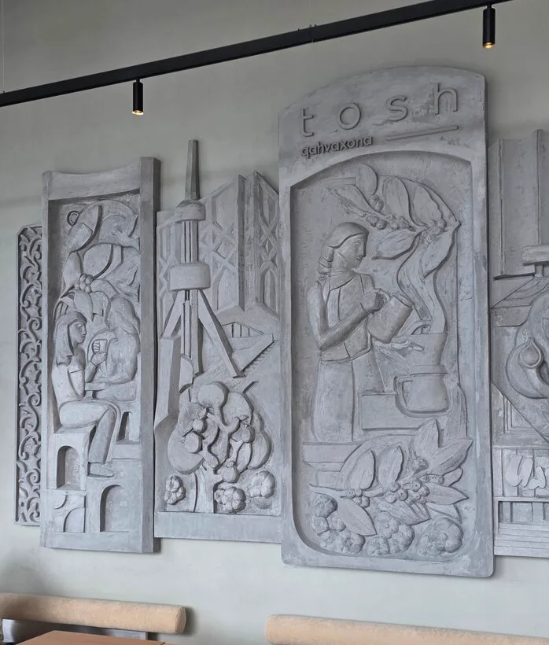
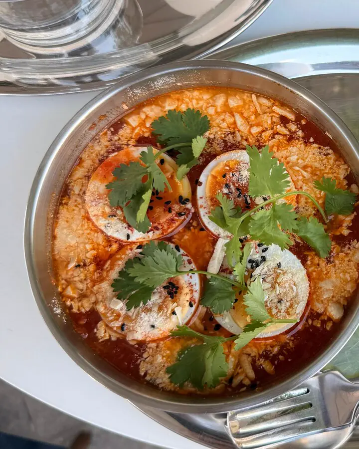
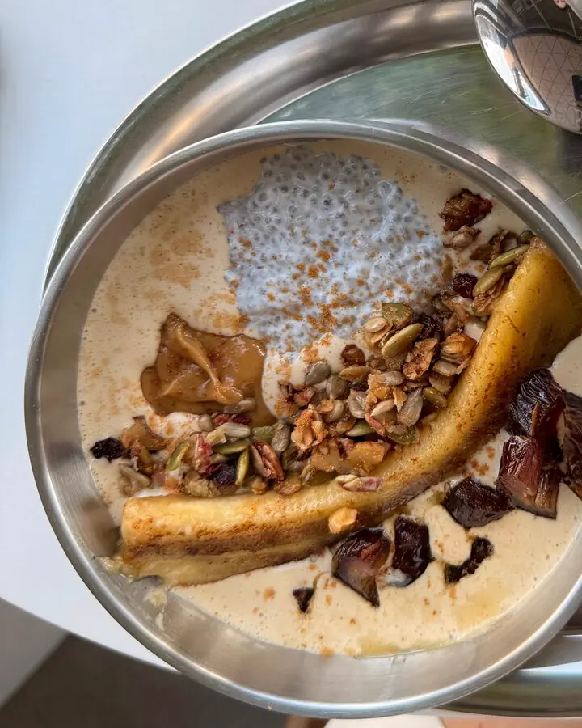
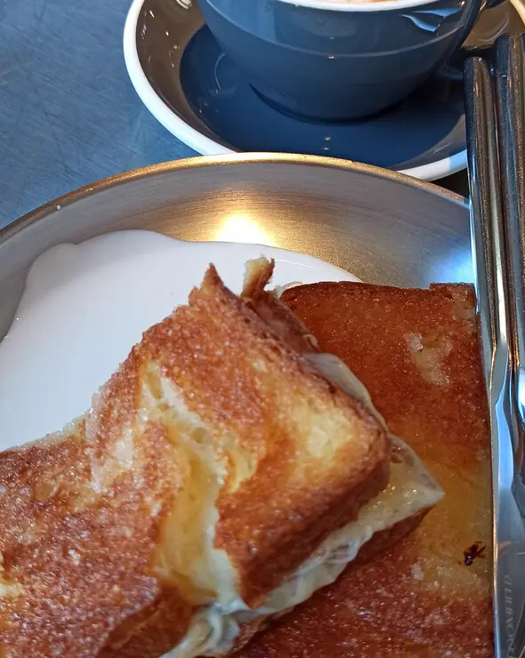
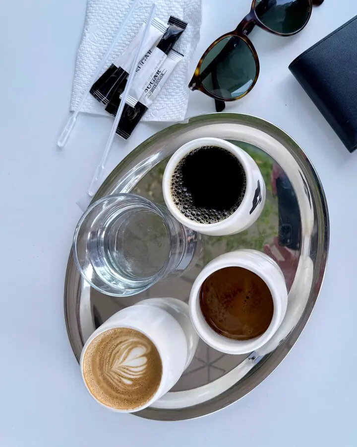
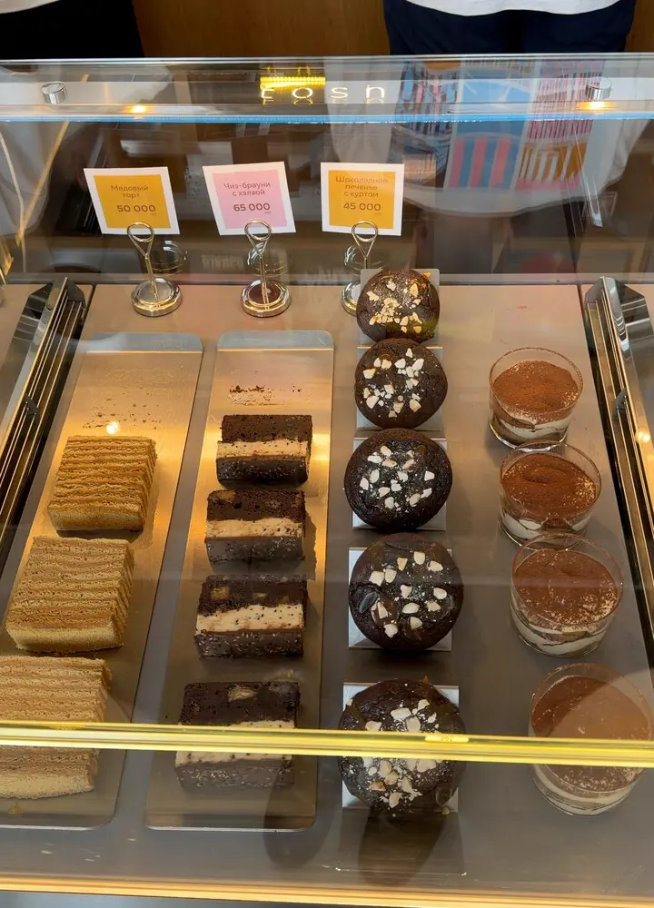
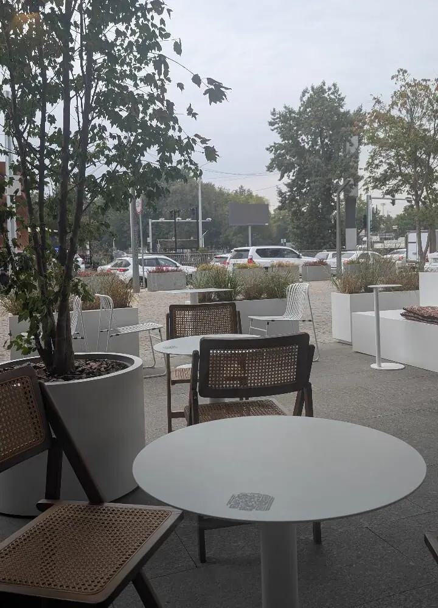

Tosh qahvaxona


Ташкент, который мы любим
Tosh — кофейня про кофе, город и детали.
«Тош» по-узбекски — камень, а Тошкент — каменный город.
- Своя обжарка
- Завтраки весь день
- Авторские напитки
- Винил и зелень
Кухня
Завтраки, салаты и лёгкие блюда.
Завтрак TOSH
35 000Традиционный узбекский завтрак: горячая лепёшка, каймак и джем.

Шакшука TOSH 
Кофейный йогурт с чиа и жареным бананом 
Карамельный тост с сыром 
Бариста-сет 
Витрина с десертами
Гости о нас
4,7 на Яндекс КартахЭто самый вкусный кофе в Ташкенте, который я пробовала. Идеальный!
Самая вкусная V60 в Ташкенте.
Очень стильное место Ташкента.
Как нас найти
Ташкент, Мирабадский район, улица Авлиё-Ата, 128
Часы работы
- Пн–Сб
- 8:00–21:00
- Вс
- 10:00–21:00
Кухня работает до 20:00.
Телефон
